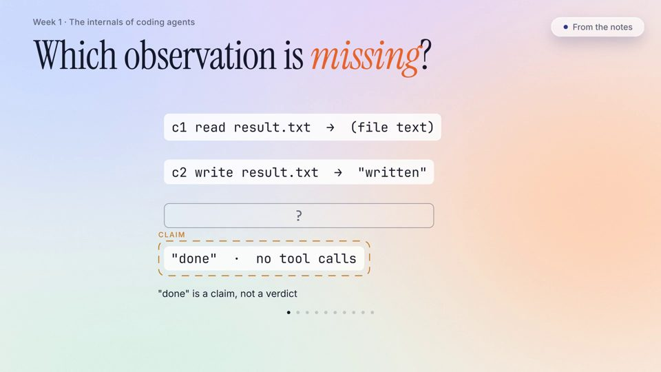
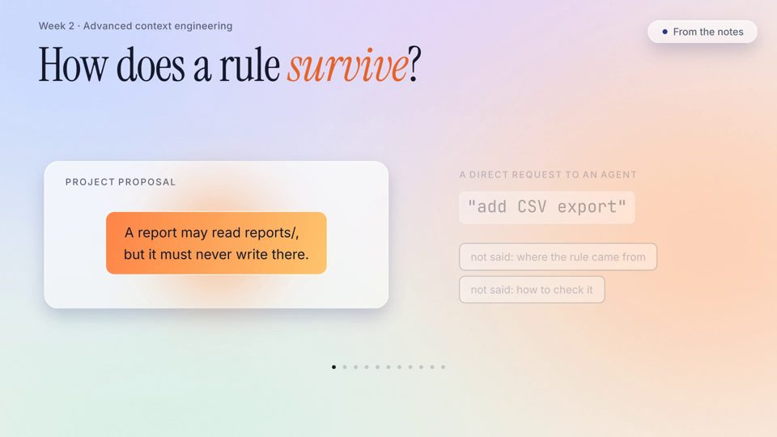
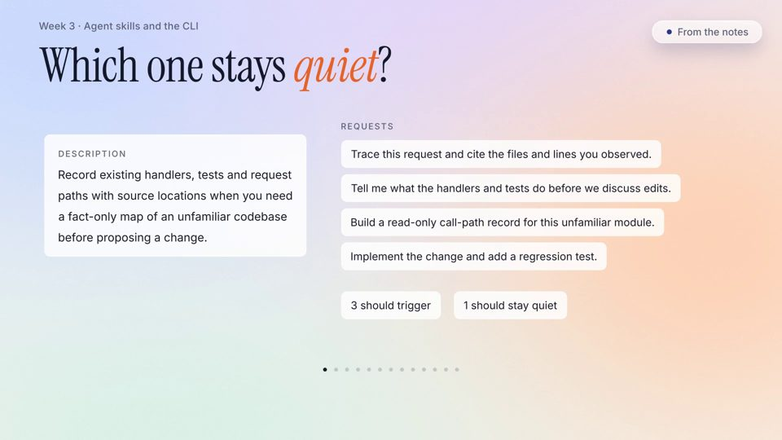
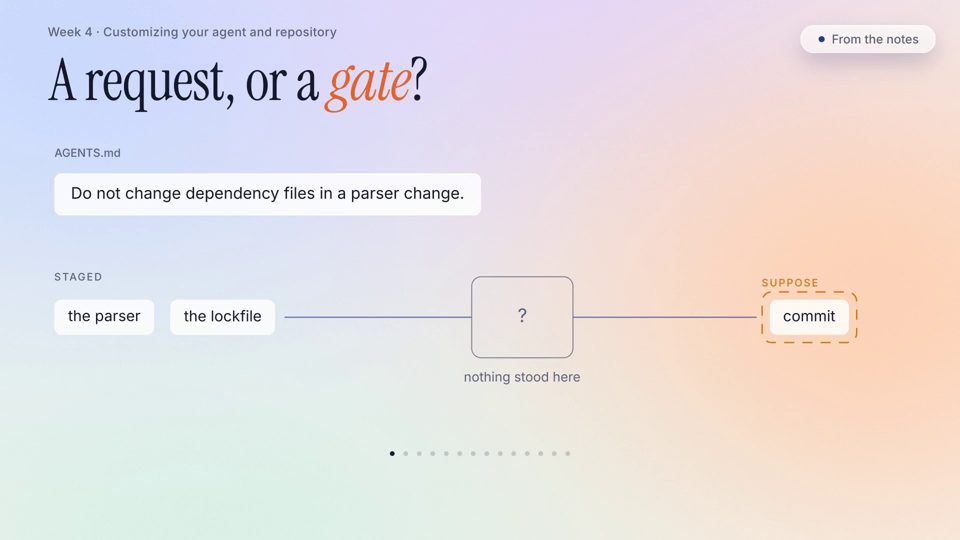
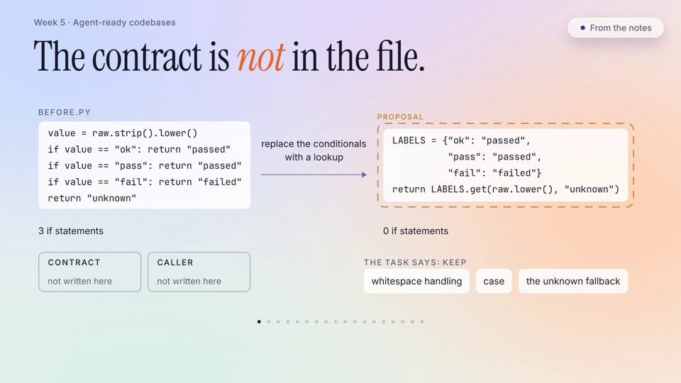
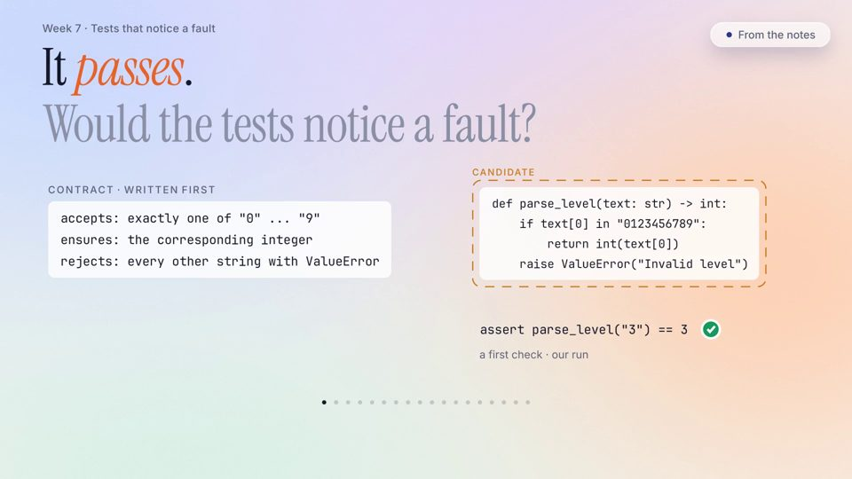
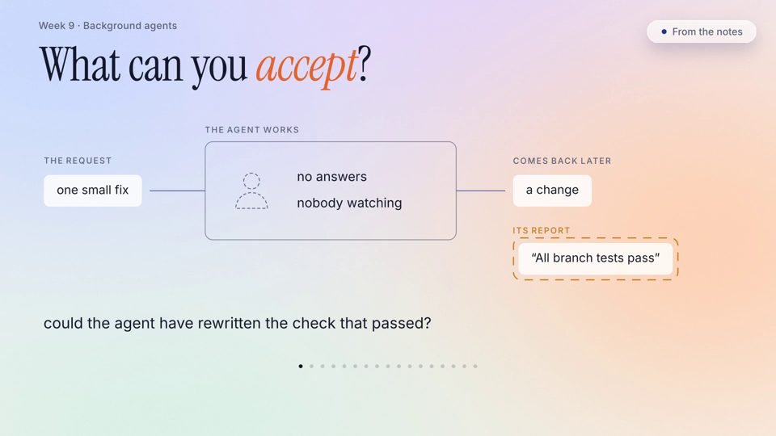
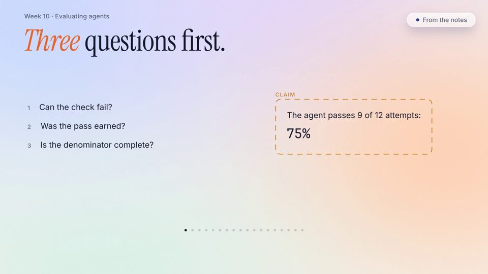
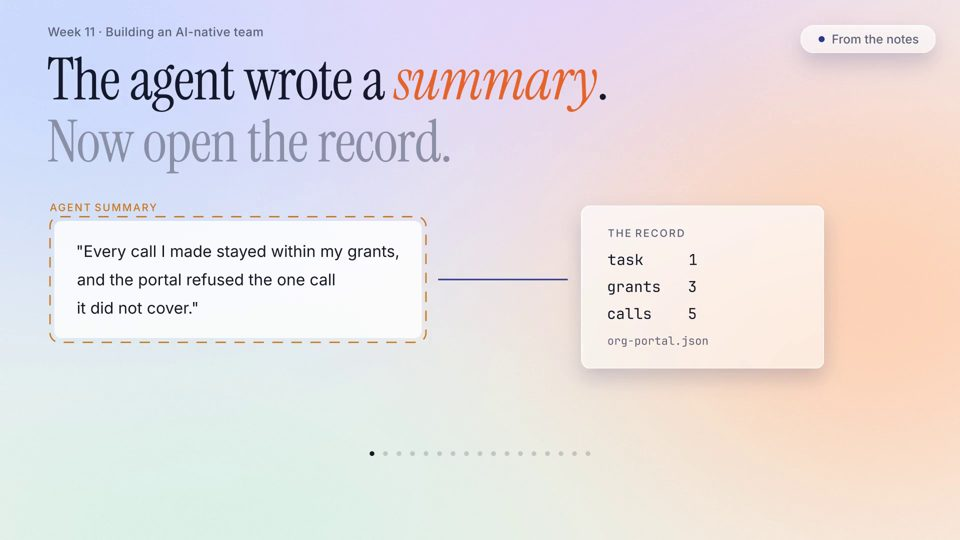
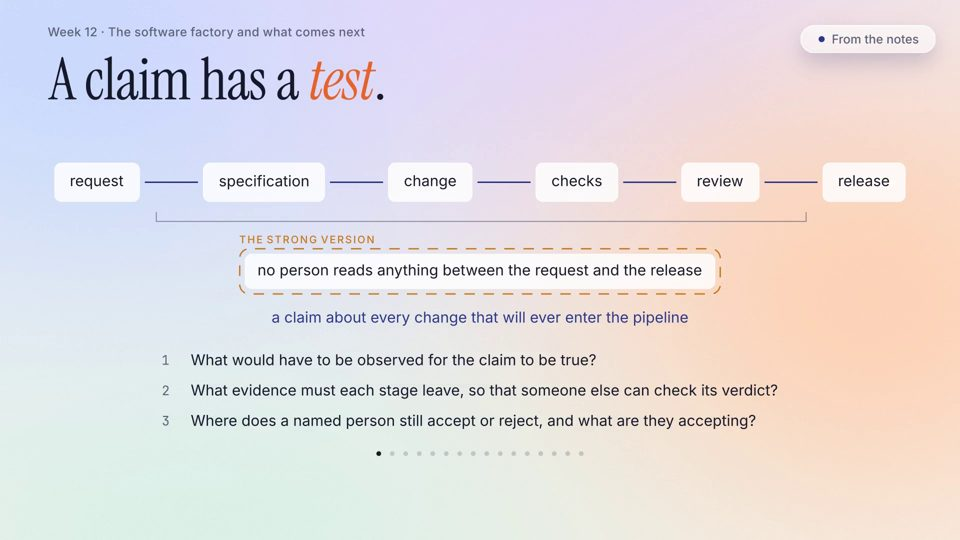

How this course works
- Length: 12 teaching weeks, then an assessment week (expo and defenses) in week 13.
- Two sessions a week: the first is a lecture that generates and then verifies, live. The second is a talk by a practitioner guest. In a week without a guest, it is a studio: you work on your own project or contribution while staff circulate. Each session is 90 minutes. The plan is one cohort of 60 students.
- Three lines of work: six assignments (mostly in the first six weeks), four open-source contributions (across two repositories), and one term project (one or two people).
Generate, then verify
Every example shows both steps. A check you can rerun is evidence; an agent saying "done" is a claim.
Predict before you look
Each class opens with a decision you can get wrong. Save your prediction, run a check that tells the answers apart, then revise.
Decide, don't regenerate
When a candidate change passes, choose one: accept it, narrow the task, recheck something specific or stop.
Explain it without the agent
You do two checkpoints and a project defense without AI. Together they are worth 30 of 100 marks.
The full approach: the three lines of work, the checkpoints and the defense →
How the work is assessed
| Component | Marks | When | AI |
|---|---|---|---|
| Term project: four milestones | 20 | Weeks 2, 4, 7 and 12 | allowed |
| Project defense | 15 | Week 13 | off |
| Four open-source contributions | 30 | Weeks 4, 8, 9 and 12 | allowed |
| Six assignments | 15 | Weeks 1-3, 5, 6 and 10 | allowed |
| CP1: AI-off diagnosis, test and repair | 7.5 | Week 6 | off |
| CP2: AI-off review of unfamiliar code and recovery reasoning | 7.5 | Week 11 | off |
| Participation: guest questions, studio, expo | 5 | All term | — |
To pass, you need all three of these: at least 60/100 overall, at least 15/30 across CP1, CP2 and the defense, and at least 5/15 on the defense.
Schedule
| Week | Topic | Due |
|---|---|---|
| 1 | The internals of coding agents | A1 |
| 2 | Advanced context engineering | A2; project proposal |
| 3 | Agent skills and the CLI | A3 |
| 4 | Customizing your agent and repository | Contribution 1; project technical specification |
| 5 | Agent-ready codebases | A4 |
| 6 | Agentic code review | A5; CP1 |
| 7 | Tests that notice a fault | Project alpha and task backlog |
| 8 | Security | Contribution 2 |
| 9 | Background agents | Contribution 3 |
| 10 | Evaluating agents | A6 |
| 11 | Building an AI-native team | CP2 |
| 12 | The software factory and what comes next | Contribution 4; final project |
| 13 | Assessment week | — |
A1–A6: assignments · Contribution 1–4: open-source contributions · CP1, CP2: 30-minute checkpoints on paper, without AI. The deadline for work due in a week is Sunday 23:59 of that week.
Videos
Short films, each showing one decision through worked examples: generate, then verify. Each is made for one teaching week and is listed under it. 12 films, 1 h 43 min in all.

Week 1 · 8:15 Done is a claim The internals of coding agents
Week 2 · 8:48 Four places to lose a rule Advanced context engineering
Week 3 · 7:12 The near miss Agent skills and the CLI
Week 4 · 7:16 A request or a gate Customizing your agent and repository
Week 5 · 8:57 Is it ready for an agent? Agent-ready codebases Week 6 · 5:53 Review before you ask Agentic code review
Week 7 · 9:51 Would the tests notice? Tests that notice a fault Week 8 · 8:25
The refusal said no
Security
Week 8 · 8:25
The refusal said no
Security

Week 9 · 9:17 Nobody was watching Background agents
Week 10 · 9:48 Before you trust 75% Evaluating agents
Week 11 · 8:58 Check the summary Building an AI-native team
Week 12 · 9:52 Has it ever failed? The software factory and what comes nextCourse materials
Everything students work from is public: each week's notes, slides, activities, readings and self-check, the assignments, the term project, the rubrics and the assessment policy.
Teaching team

Questions about the course: boxi.yu@ul.ie